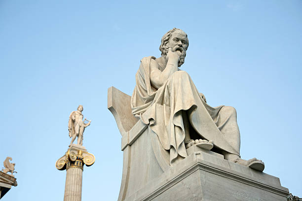

Imagenes de Socrates


| Categoría | Características |
|---|---|
| Época | Siglo V a.C. (469-399 a.C.) |
| Origen | Atenas, Grecia |
| Escuela filosófica | Mayéutica y dialéctica |
| Principales obras | No dejó escritos, su pensamiento fue transmitido por Platón y Jenofonte |
| Maestro | Desconocido, aunque se formó en la tradición sofista |
| Discípulos famosos | Platón, Jenofonte, Antístenes |
| Concepción del conocimiento | Conócete a ti mismo, método socrático |
| Contribuciones | Ética, epistemología, método mayéutico |
| Concepto clave | Ironía socrática y mayéutica |
| Visión del ser humano | Ser racional en búsqueda del conocimiento |
| Sistema ético | Virtud basada en el conocimiento del bien |
| Visión política | Crítico de la democracia ateniense |
| Influencia | Base de la filosofía occidental y de la ética |